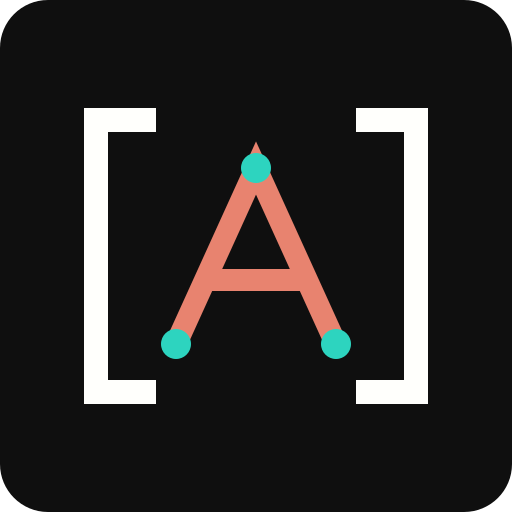

A Skill for Each Builder
Five builder skills ship with the plugin. The agent reads the matching one before it writes, so it follows that builder's storage and escaping rules instead of guessing.

An AI agent that can't see your WordPress site works from guesses and pasted snippets. Site Agent is my free plugin that connects your AI client to the site itself, so the agent reads the real content and code before it changes anything.
The agent sends the new content with the hash it got when it read the post. The post is published and no status is passed, so WordPress saves the change as an autosave for you to review.
Content writesThe live post changes only when the agent passes a status such as publish.
{
"name": "site-agent-save-content",
"arguments": {
"post_id": 42,
"content": "<!-- wp:paragraph --><p>A clearer intro.</p><!-- /wp:paragraph -->",
"expected_content_sha256": "9f2c6a..."
}
}Site Agent gives your agent 18 tools, and on Bricks sites it can add Bricks' own abilities too. The read tools work as soon as Site Agent is enabled. Every tool that changes something sits behind its own switch in Tools > Site Agent.
site-contextlist-contentget-contentlist-termslist-medialist-skillsget-skillsave-contentupload-mediaupdate-medialist-filesread-filewrite-filecreate-directorymove-filedelete-fileexecute-phprun-wp-clibricks-*bricks-abilitiesrun-bricks-abilityAn agent that writes block markup into an Elementor or Bricks page changes nothing visitors see, because the real layout lives somewhere else. Site Agent tells the agent where each layout lives and how that builder expects it to be changed.
| Builder | Layout lives in | How the agent changes it |
|---|---|---|
| Gutenberg | Block markup in the post | Content writes, then a byte-exact read-back |
| GenerateBlocks | Block markup with its own CSS | Content writes, after a serializer check |
| Elementor | JSON in post meta | Elementor's own save, sent as small patches |
| Bricks | Element arrays in post meta | Bricks' own abilities on Bricks 2.4 and later |
| Divi | Shortcodes or Divi 5 blocks in the post | Content writes, or exact fragment edits |
Five builder skills ship with the plugin. The agent reads the matching one before it writes, so it follows that builder's storage and escaping rules instead of guessing.
Content writes refuse raw Elementor, Bricks and Divi layout data. Writing it directly skips the builder's validation and leaves stale CSS behind, so the skills use each builder's own save.
On Bricks 2.4 and later, switch on Bricks tools and your agent gets Bricks' own abilities next to Site Agent's: page summaries, revisions and CSS regeneration, with Bricks' permissions still in charge.
An agent with write access will get something wrong sooner or later. I built Site Agent so the common mistakes are caught, or easy to undo, before your visitors see them.
When the agent edits a published post, the change is saved as an autosave you review in the editor, and the agent can read it back to check it. The live post changes only when the agent passes a status.
PHP is checked for syntax and compile errors first. After saving, Site Agent loads your site and puts the old file back if the change causes a fatal error.
Every update needs the hash from the agent's last read. If you or another tool changed the post or file since then, the write is refused.
Failed PHP and tool calls return the real message and line number, so the agent can correct its own code instead of guessing.
Each Application Password can be limited to the tools it needs, such as content writes for a chat app and developer tools for your local coding agent.
The audit history keeps the last 100 calls with the tool, target, password name and result. It never stores content, code or credentials.

Access starts switched off. You turn on Site Agent, pick the tool groups the task needs and save.
Every tool call then checks:
Revoking the Application Password ends that connection everywhere, including sessions that are already open.
Read the Access Model| Tool group | Default | Tools |
|---|---|---|
| Read the site | On | 7 |
| Content writes | Off | 3 |
| Source inspection | Off | 2 |
| Source editing | Off | 4 |
| PHP execution | Off | 1 |
| WP-CLI execution | Off | 1 |
| Bricks tools | Off | 2+ |
SITE_AGENT_DISABLED in wp-config.php blocks every tool.
SITE_AGENT_ALLOW_EXECUTION set to false blocks the tools that change code. Content tools and source inspection keep working.
DISALLOW_FILE_EDIT blocks every source and developer tool.
Bricks tools need Bricks 2.4 or later with its AI/MCP abilities switched on, and add Bricks' own fast-path tools to the 2 listed.

I recommend a staging site with a current backup for the developer tools. They run with server privileges and aren't a sandbox:
Setup is 4 steps on your site and a few lines of configuration in your client. The Site Agent screen builds the token and tests the connection for you.
Upload the ZIP from your account in Plugins > Add New, then open Tools > Site Agent.
Enable Site Agent and the tool groups your task needs, then save.
Create a dedicated Application Password in your WordPress profile for each client.
Paste it into the token builder and click Test connection. It names the problem if something blocks the request.

This is the safer option. Coding tools that let you add headers send Authorization: Basic BASE64_TOKEN with every request, and the token never appears in a URL.
Apps that only accept a URL get the endpoint with ?auth=BASE64_TOKEN added. URLs can end up in logs and browser history, and MCP's authorization guidance discourages tokens in them, so give this route a dedicated password you can revoke.
Replace your-site.com with your domain and BASE64_TOKEN with the token from the Site Agent screen. The URL route works with Site Agent itself, but I haven't verified it inside every web app yet.
ChatGPT connects to MCP servers in developer mode on paid plans. It can't send a custom header, so it uses the authenticated URL.
OpenAI offers developer mode to Plus, Pro, Business, Enterprise and Education accounts on the web. ChatGPT connects from OpenAI's servers, so your site must be public over HTTPS. I haven't verified that ChatGPT keeps the auth part of the URL on every request yet, so use a Header client if the connection fails.
https://your-site.com/wp-json/site-agent/v1/mcp?auth=BASE64_TOKENClaude.ai, Claude Desktop and the Claude mobile apps share custom connectors. Most plans can't send a custom header, so they use the authenticated URL.
Claude connects from Anthropic's servers, so the site must be public over HTTPS and your firewall must let Anthropic's addresses through. The Free plan allows one custom connector. Organizations in Anthropic's request-header beta can send the Authorization header instead.
https://your-site.com/wp-json/site-agent/v1/mcp?auth=BASE64_TOKENGemini CLI connects with a header. Gemini Code Assist's agent mode in VS Code reads the same settings file.
~/.gemini/settings.json, or to .gemini/settings.json in one project.The Gemini app on the web can add custom MCP apps for personal accounts in the US, but it links accounts through sign-in, and I haven't verified it with the authenticated URL.
{
"mcpServers": {
"site-agent": {
"httpUrl": "https://your-site.com/wp-json/site-agent/v1/mcp",
"headers": {
"Authorization": "Basic BASE64_TOKEN"
}
}
}
}Claude Code adds a remote server with one command and sends the Authorization header on every request.
Add --scope user to use the server in every project.
claude mcp add --transport http site-agent https://your-site.com/wp-json/site-agent/v1/mcp \
--header "Authorization: Basic BASE64_TOKEN"Cursor reads MCP servers from mcp.json and sends the headers you set.
~/.cursor/mcp.json, or to .cursor/mcp.json in one project.Cursor can read the value from an environment variable with ${env:SITE_AGENT_AUTH}, which keeps the token out of the file.
{
"mcpServers": {
"site-agent": {
"url": "https://your-site.com/wp-json/site-agent/v1/mcp",
"headers": {
"Authorization": "Basic BASE64_TOKEN"
}
}
}
}VS Code uses MCP servers in GitHub Copilot agent mode. An input variable keeps the token out of the file.
.vscode/mcp.json in your workspace.On Copilot Business and Enterprise, an admin has to allow MCP servers in Copilot first.
{
"inputs": [
{
"type": "promptString",
"id": "site-agent-token",
"description": "Site Agent Base64 token",
"password": true
}
],
"servers": {
"site-agent": {
"type": "http",
"url": "https://your-site.com/wp-json/site-agent/v1/mcp",
"headers": {
"Authorization": "Basic ${input:site-agent-token}"
}
}
}
}The Codex CLI, the Codex IDE extension and the ChatGPT desktop app share one config file, and it can send a header to an HTTP server.
~/.codex/config.toml. The codex mcp add command can't set this header, so edit the file.Use env_http_headers instead to read the value from an environment variable.
[mcp_servers.site-agent]
url = "https://your-site.com/wp-json/site-agent/v1/mcp"
http_headers = { "Authorization" = "Basic BASE64_TOKEN" }Zed adds remote MCP servers as context servers in its settings file and sends the headers you set.
settings.json and add the server under context_servers.Without an Authorization header, Zed tries OAuth, which Site Agent doesn't offer.
{
"context_servers": {
"site-agent": {
"url": "https://your-site.com/wp-json/site-agent/v1/mcp",
"headers": {
"Authorization": "Basic BASE64_TOKEN"
}
}
}
}The free checkout gives you the complete plugin and a license for automatic updates.
The code is public and GPL-licensed, and every tool works without activating the license. The license only connects your site to the update service, so new versions arrive in your Plugins screen.
Browse the Source on GitHubThe download and license key appear in your account after the free checkout.
These are the questions worth settling before you give an agent access to a site.
Any client that supports remote MCP servers over Streamable HTTP can connect, in one of two ways:
Site Agent doesn't provide OAuth. A client that only accepts OAuth needs a compatible bridge.
It is safe enough for content work on most sites, because edits to live posts are staged and every update is checked against the last read. The developer tools are a different matter. They run with server privileges, so I'd keep them on a staging site with a backup and give production passwords content access only.
The change is saved as your autosave. WordPress shows it in the editor next to the live version, and you decide whether to restore and publish it. The agent can update the live post directly only by passing a status, and it should do that only when you've asked for it.
Yes. Site Agent tells the agent which builder stores each page's layout, and the matching skill explains how to change it. Content writes refuse raw Elementor, Bricks and Divi layout data, because writing it directly skips the builder's validation and cache refresh.
Your AI client connects directly to WordPress. Site Agent has no hosted proxy and no telemetry. The client and its AI provider handle tool results under their own privacy policy.
Automatic updates send gauravtiwari.org:
PHP and WP-CLI can also make outbound requests when the agent asks them to.
The file tools work only inside these folders in wp-content:
pluginsthemesmu-pluginsHidden files and symlinks are blocked, and so are credential files such as wp-config.php and auth.json. Site Agent can't edit its own files. Source code can still contain secrets, which is why source inspection has its own switch.
Complete the free checkout, then activate the license on the Site Agent screen. New versions then appear in your Plugins screen like any other update. The license controls updates only, and you can always install a release ZIP by hand.
Connect your agent, check what it can read, then switch on more tools when the task needs them.